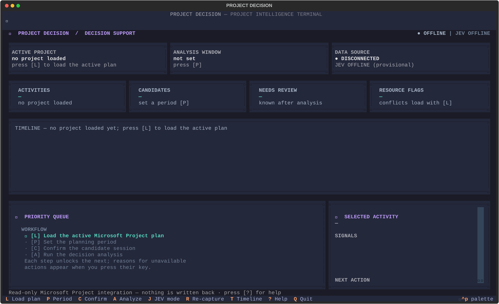
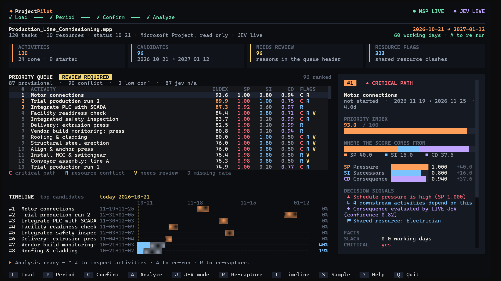

ProjectPilot reads your Microsoft Project schedule and ranks the activities that deserve attention first. Every score shows exactly where it came from.
Click any task to inspect
You stay in control at every step. ProjectPilot reads, scores, and explains. You decide.
Captures the active Microsoft Project schedule through Windows COM. Nothing is written back.
Choose a planning period and review the candidate activities.
Each activity gets a weighted Priority Index from three components.
Inspect score breakdowns, warnings, and flags for missing or low-confidence data.
Take the ranking back to Microsoft Project and act on it yourself.

Click to enlarge ↗
Click to enlarge ↗Three components, fixed weights, no black box. Missing inputs are flagged, never silently invented.
Little or no slack scores higher. Missing scheduling data is explicitly flagged for attention.
Activities that gate several downstream tasks rank higher to prevent cascading bottlenecks.
Cost, safety, quality, contract, or production impact, assessed by TypeSafe JEV from the activity name and notes only.
The returned assessment feeds the consequence component. Low-confidence assessments are flagged for human review instead of being trusted automatically.
ProjectPilot uses a provisional value of 0.5 and labels the result as provisional. Treat it as a prompt to review, not a verified priority.
Requires Windows, Python 3.12 or newer, and Microsoft Project with your schedule open. TypeSafe JEV credentials are optional.
# Clone and enter the repository git clone https://github.com/mhmdrza-mp4/ProjectPilot.git cd ProjectPilot # Create and activate a virtual environment python -m venv .venv .\.venv\Scripts\Activate.ps1 # Install with live Microsoft Project support pip install -e .[msp] # Launch the terminal dashboard pp
Optional: add TYPESAFE_API_KEY=your-key-here to a local .env file for live JEV assessments. Never commit real keys.